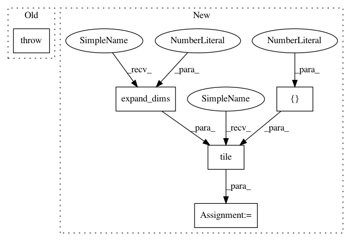

0f2d9c91b5b2b4f32ca4f1298c2549c2b03bc967,GPflow/sgpr.py,GPRFITC,build_predict,#GPRFITC#Any#Any#,200
Before Change
mean = tf.matmul( tf.transpose(w), tmp ) + self.mean_function(Xnew)
if full_cov:
raise NotImplementedError
else:
intermediateA = tf.matrix_triangular_solve(L, w, lower=True)
var = self.kern.Kdiag(Xnew) - tf.reduce_sum(tf.square(w), 0) + tf.reduce_sum(tf.square(intermediateA), 0) // size( Xnew, )
var = tf.tile(tf.expand_dims(var, 1), tf.pack([1, tf.shape(self.Y)[1]]))
After Change
if full_cov:
var = self.kern.K(Xnew) - tf.matmul(tf.transpose(w), w) + tf.matmul(tf.transpose(intermediateA),intermediateA)
var = tf.tile(tf.expand_dims(var, 2), tf.pack([1,1, tf.shape(self.Y)[1]]))
else:
var = self.kern.Kdiag(Xnew) - tf.reduce_sum(tf.square(w), 0) + tf.reduce_sum(tf.square(intermediateA), 0) // size( Xnew, )
var = tf.tile(tf.expand_dims(var, 1), tf.pack([1, tf.shape(self.Y)[1]]))
In pattern: SUPERPATTERN
Frequency: 3
Non-data size: 5
Instances
Project Name: GPflow/GPflow
Commit Name: 0f2d9c91b5b2b4f32ca4f1298c2549c2b03bc967
Time: 2016-04-13
Author: alexggmatthews@googlemail.com
File Name: GPflow/sgpr.py
Class Name: GPRFITC
Method Name: build_predict
Project Name: NifTK/NiftyNet
Commit Name: 29d9f7d43b66da4c25686134ff0366f72934a728
Time: 2018-12-13
Author: z.eaton-rosen@ucl.ac.uk
File Name: niftynet/layer/loss_segmentation.py
Class Name:
Method Name: dice_plus_xent_loss
Project Name: NifTK/NiftyNet
Commit Name: a6d07af248a7594b8dfedbf8368ddac3f901f3ec
Time: 2018-12-13
Author: z.eaton-rosen@ucl.ac.uk
File Name: niftynet/layer/loss_segmentation.py
Class Name:
Method Name: dice_plus_xent_loss
Project Name: GPflow/GPflow
Commit Name: 0f2d9c91b5b2b4f32ca4f1298c2549c2b03bc967
Time: 2016-04-13
Author: alexggmatthews@googlemail.com
File Name: GPflow/sgpr.py
Class Name: GPRFITC
Method Name: build_predict